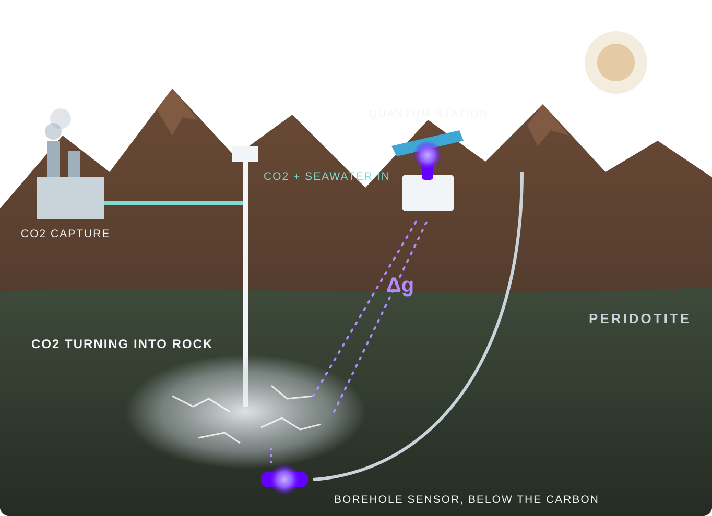

Q-MIZAN
Quantum sensors that weigh the CO2 being turned into rock in Fujairah’s mountains.

If carbon turns into rock, we should be able to weigh it.
In Fujairah, CO2 is dissolved in seawater and pumped into peridotite, a rock that reacts with it and locks it away as solid carbonate. Every tonne has to be proven to stay there before it counts toward net zero or earns carbon credits.
Q-MIZAN uses quantum gravimeters, sensors that use falling clouds of ultracold atoms, to measure the tiny extra pull of gravity as carbon builds up underground. Rising gravity shows carbon arriving. Steady gravity shows it staying put.
Three parts, one scale
Quantum gravimeters
Solar-powered surface stations, plus a slim sensor in a borehole beneath the carbon, measure gravity to a billionth of g.
Quantum-safe records
Every reading is signed with post-quantum codes, so carbon-credit records cannot be faked.
Carbon ledger
Month by month, the network turns gravity into tonnes locked in rock, and raises an alert if anything moves.
The challenge
What is happening in Fujairah, and why proving it is hard.
Read →The technology
Step through how an atom interferometer weighs the Earth.
Read →Simulation lab
Three interactive models: signal strength, monitoring over time and a sensor map.
Open the lab →Impact
What it means for the UAE, for people and for the world, and our honest limits.
Read →Research
The discoveries we build on, from 1992 to 2026, with sources.
Read →Team
Five students from ATS Abu Dhabi Boys.
Meet us →